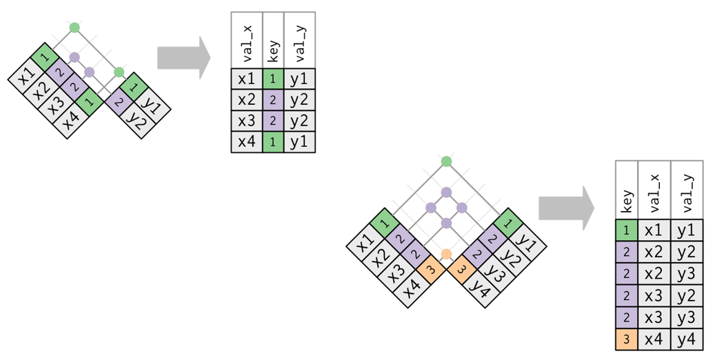
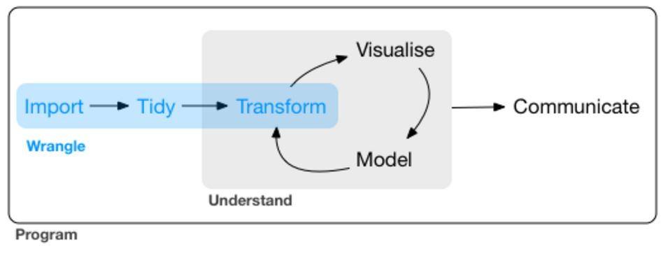
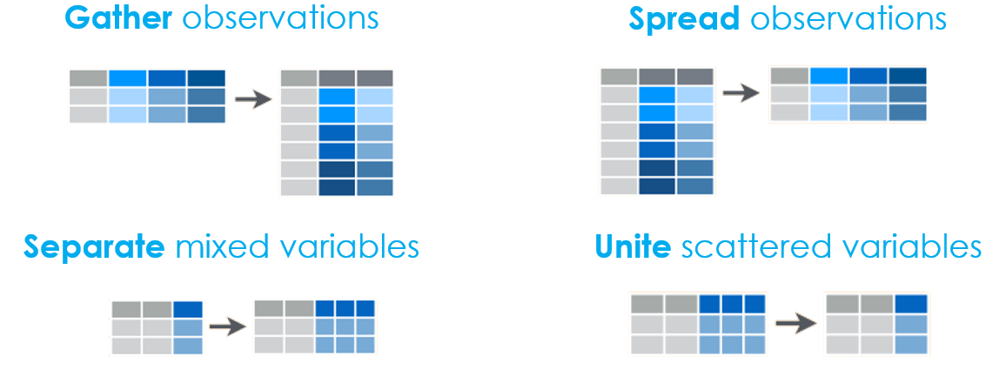
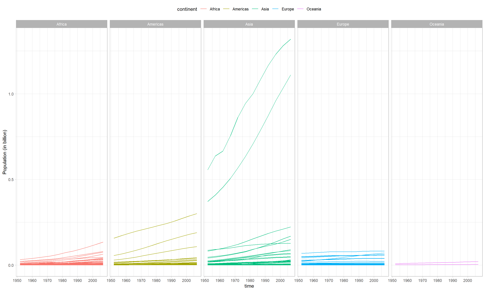
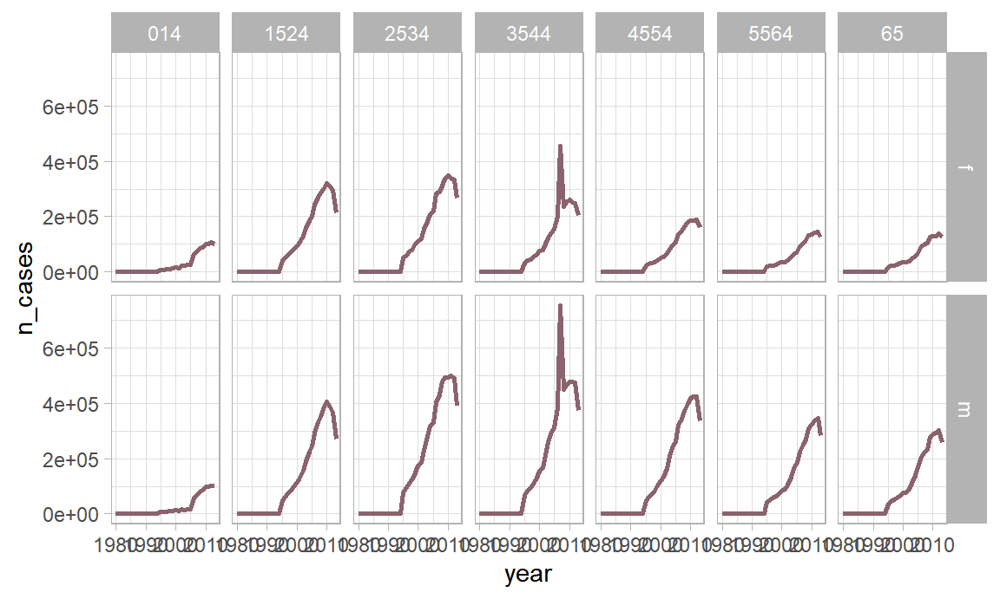

Chapter 10 Tutorial - Tidy data
10.1 Before you start
During this tutorial, we’ll use several r-packages. Make sure to install and load them, if needed.
Our old friend dplyr will provide us with some functions to combined different datasets into one. We will use tidyr to transform datasets, and stringr to do some munipulations of character variables.
This tutorial consist of two major parts:
- Merging datasets
- Transforming datasets
Thereafter, in an additional part, we will go through a case study as an example.
Disclaimer
- There are many datasets used in this tutorial. A loadscript has been provided to create all datasets for you. Just run the script and you are good to go.
Let’s get started!
10.2 Merging data
We can merge different datasets by joining or binding.
- We join different datasets which contain different information about the same observations. For example, we can have 1) a dataset of countries with their population and 2) a dataset of countries with their life expectancy. These we can join together.
## # A tibble: 114 x 2
## country pop
## <fct> <int>
## 1 Botswana 1639131
## 2 Greece 10706290
## 3 South Africa 43997828
## 4 Ethiopia 76511887
## 5 Zimbabwe 12311143
## 6 Yemen, Rep. 22211743
## 7 Nepal 28901790
## 8 Netherlands 16570613
## 9 United States 301139947
## 10 New Zealand 4115771
## # ... with 104 more rows## # A tibble: 85 x 2
## country lifeExp
## <fct> <dbl>
## 1 United States 78.2
## 2 Argentina 75.3
## 3 Korea, Dem. Rep. 67.3
## 4 Bulgaria 73.0
## 5 Chile 78.6
## 6 Croatia 75.7
## 7 Canada 80.7
## 8 Honduras 70.2
## 9 Liberia 45.7
## 10 Mexico 76.2
## # ... with 75 more rows- We bind different datasets which contain the same information on different observations. For example, we can have 1) a dataset of European countries with their population and 2) a dataset of African countries with their population. We can bind these two together.44
## # A tibble: 52 x 2
## country pop
## <fct> <int>
## 1 Algeria 33333216
## 2 Angola 12420476
## 3 Benin 8078314
## 4 Botswana 1639131
## 5 Burkina Faso 14326203
## 6 Burundi 8390505
## 7 Cameroon 17696293
## 8 Central African Republic 4369038
## 9 Chad 10238807
## 10 Comoros 710960
## # ... with 42 more rows## # A tibble: 30 x 2
## country pop
## <fct> <int>
## 1 Albania 3600523
## 2 Austria 8199783
## 3 Belgium 10392226
## 4 Bosnia and Herzegovina 4552198
## 5 Bulgaria 7322858
## 6 Croatia 4493312
## 7 Czech Republic 10228744
## 8 Denmark 5468120
## 9 Finland 5238460
## 10 France 61083916
## # ... with 20 more rowsLet’s see how we can join data.
10.2.1 Joining data
Remember, we join datasets if they contain different information on the same observations. This means that there needs to be a way to link the datasets. These links we call ids or keys.
If we have population and life expectancy data about countries, than the name, code or abbreviation of the country is our key to link both datasets.
Note that, when both datasets use different keys, for example one uses the name (Belgium) and the other the code (BE), we cannot join them. In such a case, we would need to recode one of the variables or find another datasets which can serve as an intermediary link (i.e. one that contains both the names and the codes. There exist many different country codes, so this is a common problem. But we are good to go in our case)
The join functions we will introduce in a second will always look for variables with the same names in both tables and uses these as the keys to link them. You can explicitly set the keys using the by argument. This is especially useful if
- The keys have a different name in both datasets. For example country vs ctry
- Not all common variables are actually keys.
For now, we will always let the keys be chosen by the functions. A message will tell us which keys they used.
Now, there are 4 ways to join datasets.
- inner_join
- left_join
- right_join
- full_join
Why four? Well, if we want to join two datasets, it typically happens that they don’t contain information on exactly the same observations. Have a closer look at the population and life expectancy data. The first one contains information on 114 countries and the second one contains information on 85 countries. So they can impossibly contain information on the same set of countries. The different joins will tackles this problem differently.
10.2.2 Inner join
Inner join means: I only keep information about keys that occur in both tables. So, if I don’t have the population of country A, I don’t want its life expectancy.
## Joining, by = "country"## # A tibble: 73 x 3
## country pop lifeExp
## <fct> <int> <dbl>
## 1 Botswana 1639131 50.7
## 2 South Africa 43997828 49.3
## 3 Ethiopia 76511887 52.9
## 4 Zimbabwe 12311143 43.5
## 5 Yemen, Rep. 22211743 62.7
## 6 Netherlands 16570613 79.8
## 7 United States 301139947 78.2
## 8 Kuwait 2505559 77.6
## 9 Colombia 44227550 72.9
## 10 Austria 8199783 79.8
## # ... with 63 more rowsThis join gives us 73 observations, which is the subset of countries on which we have both types of information. Also note how the inner_join tells you which key it used.
10.2.3 Left join
Left join means: I keep all information in my first (left) table. So, even if I don’t have the life expectancy, still give me the population. The missing part of the new observation (i.e. the life expectancy), is now NA.
## Joining, by = "country"## # A tibble: 114 x 3
## country pop lifeExp
## <fct> <int> <dbl>
## 1 Botswana 1639131 50.7
## 2 Greece 10706290 NA
## 3 South Africa 43997828 49.3
## 4 Ethiopia 76511887 52.9
## 5 Zimbabwe 12311143 43.5
## 6 Yemen, Rep. 22211743 62.7
## 7 Nepal 28901790 NA
## 8 Netherlands 16570613 79.8
## 9 United States 301139947 78.2
## 10 New Zealand 4115771 NA
## # ... with 104 more rowsThis join gives us 114 observations, which is the number of countries for which we have information on the population. Also note how it inserts NA’s for the lifeExp variable.
## Joining, by = "country"## country pop lifeExp
## Algeria : 1 Min. :1.996e+05 Min. :42.59
## Angola : 1 1st Qu.:4.120e+06 1st Qu.:59.44
## Australia : 1 Median :1.009e+07 Median :71.88
## Austria : 1 Mean :4.751e+07 Mean :67.78
## Bahrain : 1 3rd Qu.:2.885e+07 3rd Qu.:76.44
## Bangladesh: 1 Max. :1.319e+09 Max. :82.21
## (Other) :108 NA's :4110.2.4 Right join
Right join means: the opposite of left join. I keep all information in my second (right) table.
## Joining, by = "country"## # A tibble: 85 x 3
## country pop lifeExp
## <fct> <int> <dbl>
## 1 United States 301139947 78.2
## 2 Argentina NA 75.3
## 3 Korea, Dem. Rep. 23301725 67.3
## 4 Bulgaria 7322858 73.0
## 5 Chile 16284741 78.6
## 6 Croatia 4493312 75.7
## 7 Canada 33390141 80.7
## 8 Honduras NA 70.2
## 9 Liberia NA 45.7
## 10 Mexico 108700891 76.2
## # ... with 75 more rowsThis join gives us 85 observations, which is the number of countries for which we have information on the life expectancy.
10.2.5 Full join
Full join means: I want to keep all information I have. So also populations for countries without life expectancy and vice versa remain in the dataset. All missing information is filled in as NA.
## Joining, by = "country"## # A tibble: 126 x 3
## country pop lifeExp
## <fct> <int> <dbl>
## 1 Botswana 1639131 50.7
## 2 Greece 10706290 NA
## 3 South Africa 43997828 49.3
## 4 Ethiopia 76511887 52.9
## 5 Zimbabwe 12311143 43.5
## 6 Yemen, Rep. 22211743 62.7
## 7 Nepal 28901790 NA
## 8 Netherlands 16570613 79.8
## 9 United States 301139947 78.2
## 10 New Zealand 4115771 NA
## # ... with 116 more rowsThis join gives us 126 observations, which is the total number of countries for which we have at least one piece of information.
A schematical overview of the four types can be seen below. The coloured numbers represent the keys (countries in our example) while the x and y values represent the values (population and life expectancy in our example). Of course, there can be as many values as there are, it doesn’t just have to be one. We will see other examples soon enough.

10.2.6 Duplicates
Sometimes one or both datasets contain duplicate keys: for example, we have information of the population in each country for more than a single year, so for each country we have more than one observation. In such cases, each observation will be joined multiple times, as in the figure below.45

10.2.7 An example
The package nycflights13 contains different datasets about flights from NYC in 2013.
One of the datasets is called flights
## Observations: 336,776
## Variables: 19
## $ year <int> 2013, 2013, 2013, 2013, 2013, 2013, 2013, 2013, 2013...
## $ month <int> 1, 1, 1, 1, 1, 1, 1, 1, 1, 1, 1, 1, 1, 1, 1, 1, 1, 1...
## $ day <int> 1, 1, 1, 1, 1, 1, 1, 1, 1, 1, 1, 1, 1, 1, 1, 1, 1, 1...
## $ dep_time <int> 517, 533, 542, 544, 554, 554, 555, 557, 557, 558, 55...
## $ sched_dep_time <int> 515, 529, 540, 545, 600, 558, 600, 600, 600, 600, 60...
## $ dep_delay <dbl> 2, 4, 2, -1, -6, -4, -5, -3, -3, -2, -2, -2, -2, -2,...
## $ arr_time <int> 830, 850, 923, 1004, 812, 740, 913, 709, 838, 753, 8...
## $ sched_arr_time <int> 819, 830, 850, 1022, 837, 728, 854, 723, 846, 745, 8...
## $ arr_delay <dbl> 11, 20, 33, -18, -25, 12, 19, -14, -8, 8, -2, -3, 7,...
## $ carrier <chr> "UA", "UA", "AA", "B6", "DL", "UA", "B6", "EV", "B6"...
## $ flight <int> 1545, 1714, 1141, 725, 461, 1696, 507, 5708, 79, 301...
## $ tailnum <chr> "N14228", "N24211", "N619AA", "N804JB", "N668DN", "N...
## $ origin <chr> "EWR", "LGA", "JFK", "JFK", "LGA", "EWR", "EWR", "LG...
## $ dest <chr> "IAH", "IAH", "MIA", "BQN", "ATL", "ORD", "FLL", "IA...
## $ air_time <dbl> 227, 227, 160, 183, 116, 150, 158, 53, 140, 138, 149...
## $ distance <dbl> 1400, 1416, 1089, 1576, 762, 719, 1065, 229, 944, 73...
## $ hour <dbl> 5, 5, 5, 5, 6, 5, 6, 6, 6, 6, 6, 6, 6, 6, 6, 5, 6, 6...
## $ minute <dbl> 15, 29, 40, 45, 0, 58, 0, 0, 0, 0, 0, 0, 0, 0, 0, 59...
## $ time_hour <dttm> 2013-01-01 05:00:00, 2013-01-01 05:00:00, 2013-01-0...Another one is airlines; with more information on the arilines, evidently.
## Observations: 16
## Variables: 2
## $ carrier <chr> "9E", "AA", "AS", "B6", "DL", "EV", "F9", "FL", "HA", "MQ",...
## $ name <chr> "Endeavor Air Inc.", "American Airlines Inc.", "Alaska Airl...You can see they have the carrier variable in common, which contains a code for each airline. We can add the name of the airline to the flights
## Joining, by = "carrier"## # A tibble: 336,776 x 20
## year month day dep_time sched_dep_time dep_delay arr_time sched_arr_time
## <int> <int> <int> <int> <int> <dbl> <int> <int>
## 1 2013 1 1 517 515 2 830 819
## 2 2013 1 1 533 529 4 850 830
## 3 2013 1 1 542 540 2 923 850
## 4 2013 1 1 544 545 -1 1004 1022
## 5 2013 1 1 554 600 -6 812 837
## 6 2013 1 1 554 558 -4 740 728
## 7 2013 1 1 555 600 -5 913 854
## 8 2013 1 1 557 600 -3 709 723
## 9 2013 1 1 557 600 -3 838 846
## 10 2013 1 1 558 600 -2 753 745
## # ... with 336,766 more rows, and 12 more variables: arr_delay <dbl>,
## # carrier <chr>, flight <int>, tailnum <chr>, origin <chr>, dest <chr>,
## # air_time <dbl>, distance <dbl>, hour <dbl>, minute <dbl>, time_hour <dttm>,
## # name <chr>Note that we did an inner join and our number of flights didn’t decrease. This means that every carrier in flights is also available in airlines. In other words, for all carriers we have seen flights of, we know the name of the airline.
For a more advanced example, let’s look at weather.
## Observations: 26,115
## Variables: 15
## $ origin <chr> "EWR", "EWR", "EWR", "EWR", "EWR", "EWR", "EWR", "EWR", ...
## $ year <int> 2013, 2013, 2013, 2013, 2013, 2013, 2013, 2013, 2013, 20...
## $ month <int> 1, 1, 1, 1, 1, 1, 1, 1, 1, 1, 1, 1, 1, 1, 1, 1, 1, 1, 1,...
## $ day <int> 1, 1, 1, 1, 1, 1, 1, 1, 1, 1, 1, 1, 1, 1, 1, 1, 1, 1, 1,...
## $ hour <int> 1, 2, 3, 4, 5, 6, 7, 8, 9, 10, 11, 13, 14, 15, 16, 17, 1...
## $ temp <dbl> 39.02, 39.02, 39.02, 39.92, 39.02, 37.94, 39.02, 39.92, ...
## $ dewp <dbl> 26.06, 26.96, 28.04, 28.04, 28.04, 28.04, 28.04, 28.04, ...
## $ humid <dbl> 59.37, 61.63, 64.43, 62.21, 64.43, 67.21, 64.43, 62.21, ...
## $ wind_dir <dbl> 270, 250, 240, 250, 260, 240, 240, 250, 260, 260, 260, 3...
## $ wind_speed <dbl> 10.35702, 8.05546, 11.50780, 12.65858, 12.65858, 11.5078...
## $ wind_gust <dbl> NA, NA, NA, NA, NA, NA, NA, NA, NA, NA, NA, NA, NA, NA, ...
## $ precip <dbl> 0, 0, 0, 0, 0, 0, 0, 0, 0, 0, 0, 0, 0, 0, 0, 0, 0, 0, 0,...
## $ pressure <dbl> 1012.0, 1012.3, 1012.5, 1012.2, 1011.9, 1012.4, 1012.2, ...
## $ visib <dbl> 10, 10, 10, 10, 10, 10, 10, 10, 10, 10, 10, 10, 10, 10, ...
## $ time_hour <dttm> 2013-01-01 01:00:00, 2013-01-01 02:00:00, 2013-01-01 03...It contains information on place and time: the same we also have for flights, and it contains several variables about the weather (wind, temperature, precipitation, etc.)
Let’s join the flights data with the weather.
## Joining, by = "carrier"## Joining, by = c("year", "month", "day", "origin", "hour", "time_hour")## Observations: 335,220
## Variables: 29
## $ year <int> 2013, 2013, 2013, 2013, 2013, 2013, 2013, 2013, 2013...
## $ month <int> 1, 1, 1, 1, 1, 1, 1, 1, 1, 1, 1, 1, 1, 1, 1, 1, 1, 1...
## $ day <int> 1, 1, 1, 1, 1, 1, 1, 1, 1, 1, 1, 1, 1, 1, 1, 1, 1, 1...
## $ dep_time <int> 517, 533, 542, 544, 554, 554, 555, 557, 557, 558, 55...
## $ sched_dep_time <int> 515, 529, 540, 545, 600, 558, 600, 600, 600, 600, 60...
## $ dep_delay <dbl> 2, 4, 2, -1, -6, -4, -5, -3, -3, -2, -2, -2, -2, -2,...
## $ arr_time <int> 830, 850, 923, 1004, 812, 740, 913, 709, 838, 753, 8...
## $ sched_arr_time <int> 819, 830, 850, 1022, 837, 728, 854, 723, 846, 745, 8...
## $ arr_delay <dbl> 11, 20, 33, -18, -25, 12, 19, -14, -8, 8, -2, -3, 7,...
## $ carrier <chr> "UA", "UA", "AA", "B6", "DL", "UA", "B6", "EV", "B6"...
## $ flight <int> 1545, 1714, 1141, 725, 461, 1696, 507, 5708, 79, 301...
## $ tailnum <chr> "N14228", "N24211", "N619AA", "N804JB", "N668DN", "N...
## $ origin <chr> "EWR", "LGA", "JFK", "JFK", "LGA", "EWR", "EWR", "LG...
## $ dest <chr> "IAH", "IAH", "MIA", "BQN", "ATL", "ORD", "FLL", "IA...
## $ air_time <dbl> 227, 227, 160, 183, 116, 150, 158, 53, 140, 138, 149...
## $ distance <dbl> 1400, 1416, 1089, 1576, 762, 719, 1065, 229, 944, 73...
## $ hour <dbl> 5, 5, 5, 5, 6, 5, 6, 6, 6, 6, 6, 6, 6, 6, 6, 5, 6, 6...
## $ minute <dbl> 15, 29, 40, 45, 0, 58, 0, 0, 0, 0, 0, 0, 0, 0, 0, 59...
## $ time_hour <dttm> 2013-01-01 05:00:00, 2013-01-01 05:00:00, 2013-01-0...
## $ name <chr> "United Air Lines Inc.", "United Air Lines Inc.", "A...
## $ temp <dbl> 39.02, 39.92, 39.02, 39.02, 39.92, 39.02, 37.94, 39....
## $ dewp <dbl> 28.04, 24.98, 26.96, 26.96, 24.98, 28.04, 28.04, 24....
## $ humid <dbl> 64.43, 54.81, 61.63, 61.63, 54.81, 64.43, 67.21, 54....
## $ wind_dir <dbl> 260, 250, 260, 260, 260, 260, 240, 260, 260, 260, 26...
## $ wind_speed <dbl> 12.65858, 14.96014, 14.96014, 14.96014, 16.11092, 12...
## $ wind_gust <dbl> NA, 21.86482, NA, NA, 23.01560, NA, NA, 23.01560, NA...
## $ precip <dbl> 0, 0, 0, 0, 0, 0, 0, 0, 0, 0, 0, 0, 0, 0, 0, 0, 0, 0...
## $ pressure <dbl> 1011.9, 1011.4, 1012.1, 1012.1, 1011.7, 1011.9, 1012...
## $ visib <dbl> 10, 10, 10, 10, 10, 10, 10, 10, 10, 10, 10, 10, 10, ...Note that the second join used variables year, month, origin, hour and time_hour to join the weather of the correct place and time to each flight.
10.2.8 Binding data
The data we joined above were always different pieces of information which we somehow linked (same country, same, time, same place, same airline, etc.) Sometimes we have dataset on separate objects which are not linked, but contain the same information. Recall the datasets on African and European countries.
## # A tibble: 52 x 2
## country pop
## <fct> <int>
## 1 Algeria 33333216
## 2 Angola 12420476
## 3 Benin 8078314
## 4 Botswana 1639131
## 5 Burkina Faso 14326203
## 6 Burundi 8390505
## 7 Cameroon 17696293
## 8 Central African Republic 4369038
## 9 Chad 10238807
## 10 Comoros 710960
## # ... with 42 more rows## # A tibble: 30 x 2
## country pop
## <fct> <int>
## 1 Albania 3600523
## 2 Austria 8199783
## 3 Belgium 10392226
## 4 Bosnia and Herzegovina 4552198
## 5 Bulgaria 7322858
## 6 Croatia 4493312
## 7 Czech Republic 10228744
## 8 Denmark 5468120
## 9 Finland 5238460
## 10 France 61083916
## # ... with 20 more rowsThese observation are not linked (there is no link between an African country and a European one), but they contain the same pieces of information (i.e. population).
We can bind these rows together.
## # A tibble: 82 x 2
## country pop
## <fct> <int>
## 1 Algeria 33333216
## 2 Angola 12420476
## 3 Benin 8078314
## 4 Botswana 1639131
## 5 Burkina Faso 14326203
## 6 Burundi 8390505
## 7 Cameroon 17696293
## 8 Central African Republic 4369038
## 9 Chad 10238807
## 10 Comoros 710960
## # ... with 72 more rowsNote that we had 52 African countries and 30 European countries. Together, this makes for 82 countries.
For bind rows, it is not necesarry to have exactly the same information. Suppose that we have life expectancy for African countries, but not for European. Consider the dataset information_africa.
## # A tibble: 52 x 3
## country pop lifeExp
## <fct> <int> <dbl>
## 1 Algeria 33333216 72.3
## 2 Angola 12420476 42.7
## 3 Benin 8078314 56.7
## 4 Botswana 1639131 50.7
## 5 Burkina Faso 14326203 52.3
## 6 Burundi 8390505 49.6
## 7 Cameroon 17696293 50.4
## 8 Central African Republic 4369038 44.7
## 9 Chad 10238807 50.7
## 10 Comoros 710960 65.2
## # ... with 42 more rowsAnd we bind these two datasets.
## country pop lifeExp
## Albania: 1 Min. : 199579 Min. :39.61
## Algeria: 1 1st Qu.: 4174074 1st Qu.:47.83
## Angola : 1 Median : 9951961 Median :52.93
## Austria: 1 Mean : 18483393 Mean :54.81
## Belgium: 1 3rd Qu.: 19755656 3rd Qu.:59.44
## Benin : 1 Max. :135031164 Max. :76.44
## (Other):76 NA's :30What we could have expected did indeed happen: the 30 European countries received an NA for life expectancy. However, be wary: if both datasets have different information, maybe bind_rows is not what you are looking for, and maybe you need a join? Be sure that you understand how your datasets related to one another and how you should combine them.
That said, one more remark on merging data. If there is a bind_rows, there must surely be a bind_cols for binding columns? Yes, there is. However, we will not use this function (hurray!). bind_cols can do as it says: binding columns together just like bind_rows binds rows together. However, binding columns together means that we have 2 sets of information about the same observations? That sounds a lot like it needs a join, doesn’t it? Indeed! The main difference between bind_rows and joins is that joins will combine rows that have the same key. However, bind_rows will combine rows by position, i.e. the first row of dataset A will be combined with first row of dataset B. It won’t be looking at any keys. So if dataset A and B are in a different order, you have messed up your data. So, just forget about bind_cols. Bind_rows and joins should be able to get you where you want to be.
10.3 Transforming data
Next to merging data, we will also be learn how to transform data. The difference? For merging we need two datasets, for transforming, we will only use a single one.
The main goal of transforming our data is to make sure it is tidy. This means: every row is an observation, and every column is a variable.

Now, tidying is primarly important in the initial fase of your project, as shown in the figure below. However, it can also be useful during analyses. For some graph, it might happen that you need to transform your data - change what your observations are. This makes data transformation both essential and difficult. It is very important to understand what the current shape of your data is, and in which shape you need it to be for your analysis. This requires practice and time.

We will discuss four different transformations.46
There are 2 easy transformations:
- Combine variables
- Split variables
and 2 difficult ones
- Spread a dataset
- Gather a dataset
Below we show the schematically - the easy ones on the right, and the difficult ones on the left. Let’s look at each of them.47

10.3.1 Unite variables
We use the function unite when we have several variables that we want to combine into a single one. The syntax for unite is as follows. Suppose we have information about students, with a first_name and last_name, and we want a single “name” variable.
## # A tibble: 10 x 2
## first_name last_name
## <chr> <chr>
## 1 Kemba Raylin
## 2 Orean Elisha
## 3 Kirstyn Francico
## 4 Amparo Theoplis
## 5 Belen Ashea
## 6 Rayshaun Angela
## 7 Brazil Essie
## 8 Chaston Allyn
## 9 Reyn Tanita
## 10 Ogechi Sherriann## # A tibble: 10 x 1
## name
## <chr>
## 1 Kemba_Raylin
## 2 Orean_Elisha
## 3 Kirstyn_Francico
## 4 Amparo_Theoplis
## 5 Belen_Ashea
## 6 Rayshaun_Angela
## 7 Brazil_Essie
## 8 Chaston_Allyn
## 9 Reyn_Tanita
## 10 Ogechi_SherriannWe first specify the name for the new column (which here is just name), then we list all columns we want to unite. Note that be default, unite will put a _ between the colums. We can change this with the argument sep.
## # A tibble: 10 x 1
## name
## <chr>
## 1 Kemba Raylin
## 2 Orean Elisha
## 3 Kirstyn Francico
## 4 Amparo Theoplis
## 5 Belen Ashea
## 6 Rayshaun Angela
## 7 Brazil Essie
## 8 Chaston Allyn
## 9 Reyn Tanita
## 10 Ogechi SherriannSometimes we also prefer to keep the original variables. We can ask not te remove them as follows.
## # A tibble: 10 x 3
## name first_name last_name
## <chr> <chr> <chr>
## 1 Kemba Raylin Kemba Raylin
## 2 Orean Elisha Orean Elisha
## 3 Kirstyn Francico Kirstyn Francico
## 4 Amparo Theoplis Amparo Theoplis
## 5 Belen Ashea Belen Ashea
## 6 Rayshaun Angela Rayshaun Angela
## 7 Brazil Essie Brazil Essie
## 8 Chaston Allyn Chaston Allyn
## 9 Reyn Tanita Reyn Tanita
## 10 Ogechi Sherriann Ogechi Sherriann10.3.2 Separate variables
Separate works the other way around: it separates a single variable into multiple ones. Suppose we have a list of students (students2) with their full names, and we want to separate them.48
## # A tibble: 10 x 1
## name
## <chr>
## 1 Vashawn Heathr
## 2 Hans Musab
## 3 Shihab Mahogany
## 4 Daden Braun
## 5 Shiloh Billi
## 6 Hashir Magdalena
## 7 Latangela Lois
## 8 Lydon Aliha
## 9 Garcelle Ziah
## 10 Jaleal NancyWe can use separate in a similar way. First tell which column you want separated. Then tell them into which columns you want to put the pieces.49
## # A tibble: 10 x 2
## first_name last_name
## <chr> <chr>
## 1 Vashawn Heathr
## 2 Hans Musab
## 3 Shihab Mahogany
## 4 Daden Braun
## 5 Shiloh Billi
## 6 Hashir Magdalena
## 7 Latangela Lois
## 8 Lydon Aliha
## 9 Garcelle Ziah
## 10 Jaleal NancyDefault, separate will split the columns on any character which is not alphanumerical: anything except numbers and letters. So, he correctly used spaces, which with we are perfectly happy. If you want to changes this, you can again set the sep argument. For example, when there is a combined surname like Janssen-Swilden (let’s say such a ridiculous name actually exists), it would be split on the - sign. We don’t want that, so we should tell separate to split only on spaces, i.e. sep = " ".
Separate will create exactly as many columns as the number of names you provide in into. If he finds more or less pieces than that number for any observation, he will warn you about this. If there are less, NA will appear, if there are more, the last ones will be discarded. Also, you can use remove = F to keep the original variables.
Now let’s get ready for those difficult ones!
10.3.3 Spread data
We can use spread to take a pair of variables - a key and a value - and spread them over different columns: one for each key with the corresponding value in it.

If at this moment you hear it thundering in Keulen, it might be time for you to revise earlier tutorials. Because we have actually already seen spread before (Did we?) (Yes we did.)
The following example might refresh things a bit.
## # A tibble: 56 x 3
## color clarity n
## <ord> <ord> <int>
## 1 D I1 42
## 2 D SI2 1370
## 3 D SI1 2083
## 4 D VS2 1697
## 5 D VS1 705
## 6 D VVS2 553
## 7 D VVS1 252
## 8 D IF 73
## 9 E I1 102
## 10 E SI2 1713
## # ... with 46 more rows## # A tibble: 7 x 9
## color I1 SI2 SI1 VS2 VS1 VVS2 VVS1 IF
## <ord> <int> <int> <int> <int> <int> <int> <int> <int>
## 1 D 42 1370 2083 1697 705 553 252 73
## 2 E 102 1713 2426 2470 1281 991 656 158
## 3 F 143 1609 2131 2201 1364 975 734 385
## 4 G 150 1548 1976 2347 2148 1443 999 681
## 5 H 162 1563 2275 1643 1169 608 585 299
## 6 I 92 912 1424 1169 962 365 355 143
## 7 J 50 479 750 731 542 131 74 51When we spread data, we go from a long dataset to a wide dataset. Just look back at the example and the schematic figure. Make sure to remember this.
10.3.4 Gather data
If we already knew spread, gather is a piece of cake. It does the opposite of spread. How straightforward! So, with gather we go from a wide dataset to a long dataset, by gathering several observations into a single one.
Just look at this figure.
Let’s look at an example.
The dataset below shows the population for every country on earth after each 5 year interval, starting in 1952, ending in 2007.
## # A tibble: 142 x 14
## country continent `1952` `1957` `1962` `1967` `1972` `1977` `1982` `1987`
## <fct> <fct> <int> <int> <int> <int> <int> <int> <int> <int>
## 1 Afghan~ Asia 8.43e6 9.24e6 1.03e7 1.15e7 1.31e7 1.49e7 1.29e7 1.39e7
## 2 Albania Europe 1.28e6 1.48e6 1.73e6 1.98e6 2.26e6 2.51e6 2.78e6 3.08e6
## 3 Algeria Africa 9.28e6 1.03e7 1.10e7 1.28e7 1.48e7 1.72e7 2.00e7 2.33e7
## 4 Angola Africa 4.23e6 4.56e6 4.83e6 5.25e6 5.89e6 6.16e6 7.02e6 7.87e6
## 5 Argent~ Americas 1.79e7 1.96e7 2.13e7 2.29e7 2.48e7 2.70e7 2.93e7 3.16e7
## 6 Austra~ Oceania 8.69e6 9.71e6 1.08e7 1.19e7 1.32e7 1.41e7 1.52e7 1.63e7
## 7 Austria Europe 6.93e6 6.97e6 7.13e6 7.38e6 7.54e6 7.57e6 7.57e6 7.58e6
## 8 Bahrain Asia 1.20e5 1.39e5 1.72e5 2.02e5 2.31e5 2.97e5 3.78e5 4.55e5
## 9 Bangla~ Asia 4.69e7 5.14e7 5.68e7 6.28e7 7.08e7 8.04e7 9.31e7 1.04e8
## 10 Belgium Europe 8.73e6 8.99e6 9.22e6 9.56e6 9.71e6 9.82e6 9.86e6 9.87e6
## # ... with 132 more rows, and 4 more variables: `1992` <int>, `1997` <int>,
## # `2002` <int>, `2007` <int>Pretty well-arranged table, isn’t it? Let’s make a line plot of the evolution. We would need time (years) on the x-asis and population on the y-axis. But…? Well, f*ck me! Those variables don’t exist?! How can I make my line plot?
Let’s gather the data into those to variables.
- The key argument is the new variable in which we want old variable names to go. In our case, we want all the years as a time variable, so we can use them, instead of being scatterd over 12 variables.
- The value argument is the new variable in which the values of the old variables go. Thus, these would be the population numbers.
- After that, we specify all the columns we want to gather. In our case all years. So, we can just say that we don’t want to gather country and continent instead.50
Let’s see what happens.
## # A tibble: 1,704 x 4
## country continent time population
## <fct> <fct> <chr> <int>
## 1 Afghanistan Asia 1952 8425333
## 2 Albania Europe 1952 1282697
## 3 Algeria Africa 1952 9279525
## 4 Angola Africa 1952 4232095
## 5 Argentina Americas 1952 17876956
## 6 Australia Oceania 1952 8691212
## 7 Austria Europe 1952 6927772
## 8 Bahrain Asia 1952 120447
## 9 Bangladesh Asia 1952 46886859
## 10 Belgium Europe 1952 8730405
## # ... with 1,694 more rowsWell, exactly the opposite of spread, isn’t it? A bunch of old variables (1952, 1957, 1962, etc.) are gathered into a single new variable time. While the contents of those old variables are placed next to them in the population variable.
Note how we went from a dataset with 13 colums and 142 rows (= WIDE) to a dataset with only 3 columns but 1704 rows ( = LONG).
So, let’s wrap this up.
- For gather, key and value are new columnames. You can choose them as you like (just like I chose time and population)
- For spread, key and value are existing columns. The ones you want to spread out.
- With gather, you provide a list of existing columns which you want to gather/combine. You can also say which you don’t want using -. In fact, you can use all the select-tricks here. If you don’t tell it anything except for key and value, all columns will be gathered.
- With gather, only key and value are necessary arguemnts.
Easy, isn’t it?
Unfortunately, no. It isn’t.
Spread and gather are probably the least intuitive functions you will learn in this course. Try to read this section several times, and look very good at the examples. Try to see what’s happening. Things can get very complicated with spread and gather, as they change the structure of your data entirely. Combining them with joins only increases the difficulty. So, don’t go easy on this. Spend some time in trying to understand the functions, and learn how to use the cheatsheet. The functions are not easy at all, but you will need them sooner than you think. Let’s see them at work in other example. We will use some real-life data of the World Hearlth Organisations WHO!
Oh, I almost forgot! We would make a line plot of the population data. Well, you see, once we have gather, it gets easy. We can almost directly go to ggplot.
yearly_population %>%
gather(key = time, value = population, -country, -continent) %>%
mutate(time = as.numeric(time)) %>%
ggplot(aes(time, population/(10^9), group = country, color = continent)) +
geom_line() +
facet_grid(.~continent) +
theme_light() +
labs(y = "Population (in billion)") +
theme(legend.position = "top")
Can you tell which countries are the two soaring lines in Asia? (Please tell me you can.)
So, let’s study some health!
10.4 [Case study]: WHO
We gathered (pun intended) data about the number of (new) Tuberculosis cases broken down by
- year
- country
- age (7 groups)
- gender
- type of TB
- new/old -> (all new in our case)
- diagnosis method
- rel: relapse
- sp: smear positive
- sn: smear negative
- ep: extrapulmonary
(No need to know the different diagnosis methods.)
The data looks as follows.
## Observations: 7,240
## Variables: 60
## $ country <chr> "Afghanistan", "Afghanistan", "Afghanistan", "Afghanis...
## $ iso2 <chr> "AF", "AF", "AF", "AF", "AF", "AF", "AF", "AF", "AF", ...
## $ iso3 <chr> "AFG", "AFG", "AFG", "AFG", "AFG", "AFG", "AFG", "AFG"...
## $ year <int> 1980, 1981, 1982, 1983, 1984, 1985, 1986, 1987, 1988, ...
## $ new_sp_m014 <int> NA, NA, NA, NA, NA, NA, NA, NA, NA, NA, NA, NA, NA, NA...
## $ new_sp_m1524 <int> NA, NA, NA, NA, NA, NA, NA, NA, NA, NA, NA, NA, NA, NA...
## $ new_sp_m2534 <int> NA, NA, NA, NA, NA, NA, NA, NA, NA, NA, NA, NA, NA, NA...
## $ new_sp_m3544 <int> NA, NA, NA, NA, NA, NA, NA, NA, NA, NA, NA, NA, NA, NA...
## $ new_sp_m4554 <int> NA, NA, NA, NA, NA, NA, NA, NA, NA, NA, NA, NA, NA, NA...
## $ new_sp_m5564 <int> NA, NA, NA, NA, NA, NA, NA, NA, NA, NA, NA, NA, NA, NA...
## $ new_sp_m65 <int> NA, NA, NA, NA, NA, NA, NA, NA, NA, NA, NA, NA, NA, NA...
## $ new_sp_f014 <int> NA, NA, NA, NA, NA, NA, NA, NA, NA, NA, NA, NA, NA, NA...
## $ new_sp_f1524 <int> NA, NA, NA, NA, NA, NA, NA, NA, NA, NA, NA, NA, NA, NA...
## $ new_sp_f2534 <int> NA, NA, NA, NA, NA, NA, NA, NA, NA, NA, NA, NA, NA, NA...
## $ new_sp_f3544 <int> NA, NA, NA, NA, NA, NA, NA, NA, NA, NA, NA, NA, NA, NA...
## $ new_sp_f4554 <int> NA, NA, NA, NA, NA, NA, NA, NA, NA, NA, NA, NA, NA, NA...
## $ new_sp_f5564 <int> NA, NA, NA, NA, NA, NA, NA, NA, NA, NA, NA, NA, NA, NA...
## $ new_sp_f65 <int> NA, NA, NA, NA, NA, NA, NA, NA, NA, NA, NA, NA, NA, NA...
## $ new_sn_m014 <int> NA, NA, NA, NA, NA, NA, NA, NA, NA, NA, NA, NA, NA, NA...
## $ new_sn_m1524 <int> NA, NA, NA, NA, NA, NA, NA, NA, NA, NA, NA, NA, NA, NA...
## $ new_sn_m2534 <int> NA, NA, NA, NA, NA, NA, NA, NA, NA, NA, NA, NA, NA, NA...
## $ new_sn_m3544 <int> NA, NA, NA, NA, NA, NA, NA, NA, NA, NA, NA, NA, NA, NA...
## $ new_sn_m4554 <int> NA, NA, NA, NA, NA, NA, NA, NA, NA, NA, NA, NA, NA, NA...
## $ new_sn_m5564 <int> NA, NA, NA, NA, NA, NA, NA, NA, NA, NA, NA, NA, NA, NA...
## $ new_sn_m65 <int> NA, NA, NA, NA, NA, NA, NA, NA, NA, NA, NA, NA, NA, NA...
## $ new_sn_f014 <int> NA, NA, NA, NA, NA, NA, NA, NA, NA, NA, NA, NA, NA, NA...
## $ new_sn_f1524 <int> NA, NA, NA, NA, NA, NA, NA, NA, NA, NA, NA, NA, NA, NA...
## $ new_sn_f2534 <int> NA, NA, NA, NA, NA, NA, NA, NA, NA, NA, NA, NA, NA, NA...
## $ new_sn_f3544 <int> NA, NA, NA, NA, NA, NA, NA, NA, NA, NA, NA, NA, NA, NA...
## $ new_sn_f4554 <int> NA, NA, NA, NA, NA, NA, NA, NA, NA, NA, NA, NA, NA, NA...
## $ new_sn_f5564 <int> NA, NA, NA, NA, NA, NA, NA, NA, NA, NA, NA, NA, NA, NA...
## $ new_sn_f65 <int> NA, NA, NA, NA, NA, NA, NA, NA, NA, NA, NA, NA, NA, NA...
## $ new_ep_m014 <int> NA, NA, NA, NA, NA, NA, NA, NA, NA, NA, NA, NA, NA, NA...
## $ new_ep_m1524 <int> NA, NA, NA, NA, NA, NA, NA, NA, NA, NA, NA, NA, NA, NA...
## $ new_ep_m2534 <int> NA, NA, NA, NA, NA, NA, NA, NA, NA, NA, NA, NA, NA, NA...
## $ new_ep_m3544 <int> NA, NA, NA, NA, NA, NA, NA, NA, NA, NA, NA, NA, NA, NA...
## $ new_ep_m4554 <int> NA, NA, NA, NA, NA, NA, NA, NA, NA, NA, NA, NA, NA, NA...
## $ new_ep_m5564 <int> NA, NA, NA, NA, NA, NA, NA, NA, NA, NA, NA, NA, NA, NA...
## $ new_ep_m65 <int> NA, NA, NA, NA, NA, NA, NA, NA, NA, NA, NA, NA, NA, NA...
## $ new_ep_f014 <int> NA, NA, NA, NA, NA, NA, NA, NA, NA, NA, NA, NA, NA, NA...
## $ new_ep_f1524 <int> NA, NA, NA, NA, NA, NA, NA, NA, NA, NA, NA, NA, NA, NA...
## $ new_ep_f2534 <int> NA, NA, NA, NA, NA, NA, NA, NA, NA, NA, NA, NA, NA, NA...
## $ new_ep_f3544 <int> NA, NA, NA, NA, NA, NA, NA, NA, NA, NA, NA, NA, NA, NA...
## $ new_ep_f4554 <int> NA, NA, NA, NA, NA, NA, NA, NA, NA, NA, NA, NA, NA, NA...
## $ new_ep_f5564 <int> NA, NA, NA, NA, NA, NA, NA, NA, NA, NA, NA, NA, NA, NA...
## $ new_ep_f65 <int> NA, NA, NA, NA, NA, NA, NA, NA, NA, NA, NA, NA, NA, NA...
## $ newrel_m014 <int> NA, NA, NA, NA, NA, NA, NA, NA, NA, NA, NA, NA, NA, NA...
## $ newrel_m1524 <int> NA, NA, NA, NA, NA, NA, NA, NA, NA, NA, NA, NA, NA, NA...
## $ newrel_m2534 <int> NA, NA, NA, NA, NA, NA, NA, NA, NA, NA, NA, NA, NA, NA...
## $ newrel_m3544 <int> NA, NA, NA, NA, NA, NA, NA, NA, NA, NA, NA, NA, NA, NA...
## $ newrel_m4554 <int> NA, NA, NA, NA, NA, NA, NA, NA, NA, NA, NA, NA, NA, NA...
## $ newrel_m5564 <int> NA, NA, NA, NA, NA, NA, NA, NA, NA, NA, NA, NA, NA, NA...
## $ newrel_m65 <int> NA, NA, NA, NA, NA, NA, NA, NA, NA, NA, NA, NA, NA, NA...
## $ newrel_f014 <int> NA, NA, NA, NA, NA, NA, NA, NA, NA, NA, NA, NA, NA, NA...
## $ newrel_f1524 <int> NA, NA, NA, NA, NA, NA, NA, NA, NA, NA, NA, NA, NA, NA...
## $ newrel_f2534 <int> NA, NA, NA, NA, NA, NA, NA, NA, NA, NA, NA, NA, NA, NA...
## $ newrel_f3544 <int> NA, NA, NA, NA, NA, NA, NA, NA, NA, NA, NA, NA, NA, NA...
## $ newrel_f4554 <int> NA, NA, NA, NA, NA, NA, NA, NA, NA, NA, NA, NA, NA, NA...
## $ newrel_f5564 <int> NA, NA, NA, NA, NA, NA, NA, NA, NA, NA, NA, NA, NA, NA...
## $ newrel_f65 <int> NA, NA, NA, NA, NA, NA, NA, NA, NA, NA, NA, NA, NA, NA...To be honest: quite a mess. We don’t really need 60 variables for the data we just described, do we? What’s going on?
It seems that for each country and each year, the data contains one row. Let’s verify.
## # A tibble: 7,240 x 3
## country year n
## <chr> <int> <int>
## 1 Afghanistan 1980 1
## 2 Afghanistan 1981 1
## 3 Afghanistan 1982 1
## 4 Afghanistan 1983 1
## 5 Afghanistan 1984 1
## 6 Afghanistan 1985 1
## 7 Afghanistan 1986 1
## 8 Afghanistan 1987 1
## 9 Afghanistan 1988 1
## 10 Afghanistan 1989 1
## # ... with 7,230 more rowsWe see mostly ones. Let’s check for sure.
## # A tibble: 0 x 3
## # ... with 3 variables: country <chr>, year <int>, n <int>Ok. So, each year, each country, one row. We have 7240 rows because we have
## [1] 3434 years, and
## [1] 219219 countries.
Thus we expect this many rows:
## [1] 7446It seems we are missing 206 rows. I.e. there are countries for which we don’t have all years, or vice versa. It is not really important here, but these are the kind of things a good data analyst checks.
Let’s go back to our problem.
Of the 60 variables, the first 3 all depict country (Remember that I told you that there are different ways to abbreviate a country), and the 4th contains the year. So, there remain 56 variables.
Well, we have information on 7 age groups, 2 genders, and 4 diagnosis methods. 7 times 2 times 4 equals 56. Aha! All the different cases are putted in a different variable. That’s not really easy to work with.
Why not, I heard you think?
Let’s try to solve the following questions.
- How many women older, 25 or older in Belgium were diagnosed with TB in 2000? How many of those had a relaps?
- What is the total number of TB cases in Belgium in each year?
- Can you graphically show the evolution of the number of cases for different genders and age groups?
No, you can’t. At least, not without a lot of work, or without tidying our data. So, let’s start.
It is often helpful to think about the format we would like our data to be in, without getting lost in transformation. Ideally, we would like to have the following variables:
- country
- year
- is_new
- diagnosis
- gender
- age
- cases (the number of TB cases)
First of all, let’s go to a dataset in a long format, by gathering all the different types of diagnosis and cases into a long list. We will not gather the first 4 columns. The old columns will be a variable “type”, and the numbers will be called “cases”.
## # A tibble: 405,440 x 6
## country iso2 iso3 year type cases
## <chr> <chr> <chr> <int> <chr> <int>
## 1 Afghanistan AF AFG 1980 new_sp_m014 NA
## 2 Afghanistan AF AFG 1981 new_sp_m014 NA
## 3 Afghanistan AF AFG 1982 new_sp_m014 NA
## 4 Afghanistan AF AFG 1983 new_sp_m014 NA
## 5 Afghanistan AF AFG 1984 new_sp_m014 NA
## 6 Afghanistan AF AFG 1985 new_sp_m014 NA
## 7 Afghanistan AF AFG 1986 new_sp_m014 NA
## 8 Afghanistan AF AFG 1987 new_sp_m014 NA
## 9 Afghanistan AF AFG 1988 new_sp_m014 NA
## 10 Afghanistan AF AFG 1989 new_sp_m014 NA
## # ... with 405,430 more rowsSee what happened? Take a good look.
Had you figured out that we first needed to gather the data? If yes, congratulations, you start to get what data transformation is and which transformations you need where. If no, don’t worry. Remember that I told you this is a hard skill. Furthermore, there are probably different ways to do this.
We can get rid of iso2 and iso3. Note that they might be useful for joining the data with other data about countries, but we have no plans to do so. Just, let’s get them out of our way.
## # A tibble: 405,440 x 4
## country year type cases
## <chr> <int> <chr> <int>
## 1 Afghanistan 1980 new_sp_m014 NA
## 2 Afghanistan 1981 new_sp_m014 NA
## 3 Afghanistan 1982 new_sp_m014 NA
## 4 Afghanistan 1983 new_sp_m014 NA
## 5 Afghanistan 1984 new_sp_m014 NA
## 6 Afghanistan 1985 new_sp_m014 NA
## 7 Afghanistan 1986 new_sp_m014 NA
## 8 Afghanistan 1987 new_sp_m014 NA
## 9 Afghanistan 1988 new_sp_m014 NA
## 10 Afghanistan 1989 new_sp_m014 NA
## # ... with 405,430 more rowsNow, there is a lot of information in the type variable. Actually, there are more variables in this single variable. let’s separate them. (See how that thought process goes?)
First, let’s look at the different levels by doing a quick count.
who %>%
gather(key = type, value = cases, -country:-year) %>%
select(-iso2, -iso3) %>%
count(type) %>%
print(n = Inf) # I want to see all of them## # A tibble: 56 x 2
## type n
## <chr> <int>
## 1 new_ep_f014 7240
## 2 new_ep_f1524 7240
## 3 new_ep_f2534 7240
## 4 new_ep_f3544 7240
## 5 new_ep_f4554 7240
## 6 new_ep_f5564 7240
## 7 new_ep_f65 7240
## 8 new_ep_m014 7240
## 9 new_ep_m1524 7240
## 10 new_ep_m2534 7240
## 11 new_ep_m3544 7240
## 12 new_ep_m4554 7240
## 13 new_ep_m5564 7240
## 14 new_ep_m65 7240
## 15 new_sn_f014 7240
## 16 new_sn_f1524 7240
## 17 new_sn_f2534 7240
## 18 new_sn_f3544 7240
## 19 new_sn_f4554 7240
## 20 new_sn_f5564 7240
## 21 new_sn_f65 7240
## 22 new_sn_m014 7240
## 23 new_sn_m1524 7240
## 24 new_sn_m2534 7240
## 25 new_sn_m3544 7240
## 26 new_sn_m4554 7240
## 27 new_sn_m5564 7240
## 28 new_sn_m65 7240
## 29 new_sp_f014 7240
## 30 new_sp_f1524 7240
## 31 new_sp_f2534 7240
## 32 new_sp_f3544 7240
## 33 new_sp_f4554 7240
## 34 new_sp_f5564 7240
## 35 new_sp_f65 7240
## 36 new_sp_m014 7240
## 37 new_sp_m1524 7240
## 38 new_sp_m2534 7240
## 39 new_sp_m3544 7240
## 40 new_sp_m4554 7240
## 41 new_sp_m5564 7240
## 42 new_sp_m65 7240
## 43 newrel_f014 7240
## 44 newrel_f1524 7240
## 45 newrel_f2534 7240
## 46 newrel_f3544 7240
## 47 newrel_f4554 7240
## 48 newrel_f5564 7240
## 49 newrel_f65 7240
## 50 newrel_m014 7240
## 51 newrel_m1524 7240
## 52 newrel_m2534 7240
## 53 newrel_m3544 7240
## 54 newrel_m4554 7240
## 55 newrel_m5564 7240
## 56 newrel_m65 7240Oh crap. The first 42 levels are nicely separated by 2 underscores. But the last are not. It’s all “newrel” instead of “new_rel”. Separate will not be able to split that…
So, let’s pull together a neat trick. We are going to replace all the little “newrel” part with “new_rel”. How? Using the stringr package for string manipulation. It has a useful function str_replace. Here we go.
who %>%
gather(key = type, value = cases, -country:-year) %>%
select(-iso2, -iso3) %>%
mutate(type = str_replace(type, "newrel", "new_rel")) %>%
count(type) %>%
print(n = Inf)## # A tibble: 56 x 2
## type n
## <chr> <int>
## 1 new_ep_f014 7240
## 2 new_ep_f1524 7240
## 3 new_ep_f2534 7240
## 4 new_ep_f3544 7240
## 5 new_ep_f4554 7240
## 6 new_ep_f5564 7240
## 7 new_ep_f65 7240
## 8 new_ep_m014 7240
## 9 new_ep_m1524 7240
## 10 new_ep_m2534 7240
## 11 new_ep_m3544 7240
## 12 new_ep_m4554 7240
## 13 new_ep_m5564 7240
## 14 new_ep_m65 7240
## 15 new_rel_f014 7240
## 16 new_rel_f1524 7240
## 17 new_rel_f2534 7240
## 18 new_rel_f3544 7240
## 19 new_rel_f4554 7240
## 20 new_rel_f5564 7240
## 21 new_rel_f65 7240
## 22 new_rel_m014 7240
## 23 new_rel_m1524 7240
## 24 new_rel_m2534 7240
## 25 new_rel_m3544 7240
## 26 new_rel_m4554 7240
## 27 new_rel_m5564 7240
## 28 new_rel_m65 7240
## 29 new_sn_f014 7240
## 30 new_sn_f1524 7240
## 31 new_sn_f2534 7240
## 32 new_sn_f3544 7240
## 33 new_sn_f4554 7240
## 34 new_sn_f5564 7240
## 35 new_sn_f65 7240
## 36 new_sn_m014 7240
## 37 new_sn_m1524 7240
## 38 new_sn_m2534 7240
## 39 new_sn_m3544 7240
## 40 new_sn_m4554 7240
## 41 new_sn_m5564 7240
## 42 new_sn_m65 7240
## 43 new_sp_f014 7240
## 44 new_sp_f1524 7240
## 45 new_sp_f2534 7240
## 46 new_sp_f3544 7240
## 47 new_sp_f4554 7240
## 48 new_sp_f5564 7240
## 49 new_sp_f65 7240
## 50 new_sp_m014 7240
## 51 new_sp_m1524 7240
## 52 new_sp_m2534 7240
## 53 new_sp_m3544 7240
## 54 new_sp_m4554 7240
## 55 new_sp_m5564 7240
## 56 new_sp_m65 7240That’s better, isn’t it? By the way, do you see how we at each point build on what we did before? This way we can easily change mistakes if we make some. Only when our data is correctly transformed, we save it, and put the code in our loadscript.
But now, we can separate the data. The first part will become the is_new variable, the second part the diagnosis variable, and the last part… well, it contaisn both the gender (f/m) and the age category. Let’s just call it age_gender, and tackle that problem later.
who %>%
gather(key = type, value = cases, -country:-year) %>%
select(-iso2, -iso3) %>%
mutate(type = str_replace(type, "newrel", "new_rel")) %>%
separate(type, into = c("is_new", "diagnosis", "gender_age")) ## # A tibble: 405,440 x 6
## country year is_new diagnosis gender_age cases
## <chr> <int> <chr> <chr> <chr> <int>
## 1 Afghanistan 1980 new sp m014 NA
## 2 Afghanistan 1981 new sp m014 NA
## 3 Afghanistan 1982 new sp m014 NA
## 4 Afghanistan 1983 new sp m014 NA
## 5 Afghanistan 1984 new sp m014 NA
## 6 Afghanistan 1985 new sp m014 NA
## 7 Afghanistan 1986 new sp m014 NA
## 8 Afghanistan 1987 new sp m014 NA
## 9 Afghanistan 1988 new sp m014 NA
## 10 Afghanistan 1989 new sp m014 NA
## # ... with 405,430 more rowsCool, that worked! We didn’t even need to tell separate how to split. He decided this automagically. What a smart boy!
Now, let’s split age_gender. But on what? There is no character to split on. However, separate is so smart, we can tell him to split after the first character - ’cause that one is the gender, the remainder is the age. We could actually do this for any character. We just need to set sep = n, where n is our number. In this case 1. Let’s try!
who %>%
gather(key = type, value = cases, -country:-year) %>%
select(-iso2, -iso3) %>%
mutate(type = str_replace(type, "newrel", "new_rel")) %>%
separate(type, into = c("is_new", "diagnosis", "gender_age")) %>%
separate(gender_age, into = c("gender","age"), sep = 1)## # A tibble: 405,440 x 7
## country year is_new diagnosis gender age cases
## <chr> <int> <chr> <chr> <chr> <chr> <int>
## 1 Afghanistan 1980 new sp m 014 NA
## 2 Afghanistan 1981 new sp m 014 NA
## 3 Afghanistan 1982 new sp m 014 NA
## 4 Afghanistan 1983 new sp m 014 NA
## 5 Afghanistan 1984 new sp m 014 NA
## 6 Afghanistan 1985 new sp m 014 NA
## 7 Afghanistan 1986 new sp m 014 NA
## 8 Afghanistan 1987 new sp m 014 NA
## 9 Afghanistan 1988 new sp m 014 NA
## 10 Afghanistan 1989 new sp m 014 NA
## # ... with 405,430 more rowsI don’t know about you, but I think this is exactly how we wanted the data to be! Let’s save it now.
who %>%
gather(key = type, value = cases, -country:-year) %>%
select(-iso2, -iso3) %>%
mutate(type = str_replace(type, "newrel", "new_rel")) %>%
separate(type, into = c("is_new", "diagnosis", "gender_age")) %>%
separate(gender_age, into = c("gender","age"), sep = 1) -> tidy_whoAnd just for fun, let us solve the questions we had earlier.
- How many women older, 25 or older in Belgium were diagnosed with TB in 2000? How many of those had a relaps?
tidy_who %>%
filter(gender == "f", !(age %in% c("014","1524")), country == "Belgium", year == 2000) %>%
group_by(diagnosis) %>%
summarize(n_cases = sum(cases, na.rm = T))## # A tibble: 4 x 2
## diagnosis n_cases
## <chr> <int>
## 1 ep 0
## 2 rel 0
## 3 sn 0
## 4 sp 78According to this data, there were 78 cases, and none of them were relapses.
- What is the total number of TB cases in Belgium in each year?
tidy_who %>%
filter(country == "Belgium") %>%
group_by(year) %>%
summarize(n_cases = sum(cases, na.rm = T))## # A tibble: 34 x 2
## year n_cases
## <int> <int>
## 1 1980 0
## 2 1981 0
## 3 1982 0
## 4 1983 0
## 5 1984 0
## 6 1985 0
## 7 1986 0
## 8 1987 0
## 9 1988 0
## 10 1989 0
## # ... with 24 more rows(It seems there were no cases of TB in Belgium before 1995. Or we are just missing data? That’s the thing na.rm can do. You must be careful.)
- Can you graphically show the evolution of the number of cases for different genders and age groups?
tidy_who %>%
group_by(year, age, gender) %>%
summarize(n_cases = sum(cases, na.rm = T)) %>%
ggplot(aes(year, n_cases)) +
geom_line(color = "pink4", lwd = 1) +
facet_grid(gender~age) +
theme_light()
There are actually ofther cases in which we can bind datasets together, but please don’t bother about that for now. Just remind: bind different observations, join different information]↩
Of course, if we have both population data about multiple years and life expectancy data about multiple years, we should just include the year as a key variable. We don’t want them to mix up. In that case, each observation is defined by both country and year.↩
Note that we used the term transformation for different things. We have used it before to transform variables (recode factors, rescale numerics, etc). At this moment we use it to transform data, which means that we are talking about multiple variable or complete datasets. The word choice is not to confuse you, we are actually doing the same thing, but at different levels.↩
Note that all the join and transformation functions discussed here are included on the cheatsheet of Data Manipulation. Make sure you can use it during exercises and exams!↩
Note how you spell separate. An e, followed by an a, another a, and another e. Can you remember that? Congratulations, you have just avoided a series of very common mistakes!↩
Note that the col argument in unite is the new column, the col argument in separate is the existing column! Also note that the new columns created by separate should be given as a character vector, not as a list of unquoted names like we did in unite.↩
Actually, there is a more important reason we want to use -country and -continent instead of listing all years, apart from being lazy. Remember that all object and variable names in R need to start with a letter, not a number? Well, the year columns clearly don’t. Selecting them would need a special technique. Just saying 1952:2007 would unfortunately not work. But, luckily, that’s a story for another time.↩